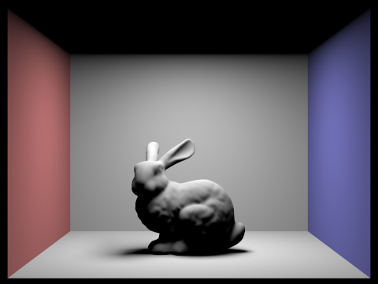

CS184/284A Spring 2025 Homework 3 Write-Up
Link to webpage: https://cal-cs184-student.github.io/hw-webpages-ishan/hw3/index.html
Link to GitHub repository: https://github.com/cal-cs184-student/sp25-hw3-ishan_a
Overview
In this homework, we explored various techniques used to simulate light in a scene. We began by implementing the fundamentals of ray tracing, including sampling rays per pixel and intersecting those rays with scene geometry on different shapes. We then introduced acceleration structures, specifically bounding volume hierarchies (BVHs), to speed up the ray tracing process. Next, we implemented direct lighting to compute incoming radiance on surfaces, and extended this to handle indirect lighting through multiple bounces. This allowed for more realistic and detailed images. To reduce noise, we incorporated importance sampling of lights and made the process unbiased using Russian Roulette. Finally, we implemented adaptive sampling to improve efficiency, recognizing that different regions of an image converge at different rates. Overall, this homework gave me a deeper understanding of how light is simulated in computer graphics, and how various techniques are used to implement and optimize realistic rendering in practice.Part 1: Ray Generation and Scene Intersection
For ray generation, I first converted the normalized pixel coordinates to camera space. The camera-space x-coordinate was calculated as (2 * x_pixel - 1) * tan(hFov / 2), and a similar expression was used for the y-coordinate. I then transformed the resulting direction vector from camera space to world space using the camera-to-world (c2w) matrix. The ray's origin in world space was simply the camera's position.
For triangle intersection, I implemented the Möller–Trumbore algorithm. This algorithm computes the intersection time at which the ray intersects the plane of the triangle, along with the barycentric coordinates of the intersection point. If the intersection time was greater than zero and within the ray’s valid bounds, and all barycentric coordinates were non-negative (ensuring the point was inside the triangle), the intersection was considered valid. If so, I updated the ray’s max_t value and returned true.
Below are a few rendered images using normal shading to visualize this intersection algorithm on small .dae models.
|
|

|

|
Part 2: Bounding Volume Hierarchy
For my BVH construction, I began by computing the global bounding box that enclosed all the relevant primitives, as well as their centroids. If the number of primitives was less than or equal to the max_leaf_size, I terminated the recursion and set the current node as a leaf. Otherwise, I selected the splitting dimension based on the axis with the largest extent in the bounding box. I then partitioned the primitives into left and right groups using the median of the centroids along that dimension. If one group ended up empty, I defaulted to a naive split of half the primitives. Recursively, I constructed BVH nodes for the left and right subgroups.
This BVH structure allowed me to dramatically reduce rendering times for complex scenes. For instance, rendering cow.dae without BVH took 19.12 seconds, but with BVH, it took only 0.0425 seconds — a 450× speedup. Similarly, teapot.dae dropped from 19.56 seconds to just 0.1583 seconds (124× speedup). These results show how BVH can allow for for scalable rendering.
Below are some examples of large scenes rendered with BVH and normal shading:

|
|
|
|
Part 3: Direct Illumination
To implement direct lighting with uniform hemisphere sampling, I first generated random directions over the hemisphere above the surface point. For each sample direction w_incoming, I transformed it into world space and cast a shadow ray from the surface point in that direction. If the ray intersected an emissive object (i.e., a light), I used the emitted radiance as incoming light. I then multiplied this with the BSDF value and the cosine of the angle between the incoming ray and the surface normal, and divided the result by the probability density function of sampling the hemisphere uniformly (1 / (2π)). Averaging over all such samples yielded the total lighting contribution.
For importance sampling of lights, I looped over all lights in the scene. For point lights, a single sample sufficed while for area lights, I took multiple samples. For each sample, I computed the incoming radiance, direction, distance, and sampling PDF. I cast a shadow ray toward the light and verified it was unoccluded by setting the ray's max time to be slightly less than the distance to the light. If visible, I evaluated the BSDF and cosine term, scaled by the incoming radiance and divided by the sampling PDF, and then averaged across all samples to estimate the total light contribution.
Below, we compare direct illumination results using both approaches on the same bunny scene. The first image uses uniform hemisphere sampling, while the rest use light sampling with 1, 4, 16, and 64 light rays respectively, all with 1 sample per pixel.
|
|
|
|
|
|
|
|
Comparing the results, it's clear that importance sampling yields significantly less noise than uniform hemisphere sampling when using the same number of light rays. The hemisphere-sampled image is extremely grainy and doesn't show much, while even one light sample in the importance sampling method produces much smoother shading. As the number of sampled light rays increases from 1 to 64, the noise in soft shadows decreases substantially, demonstrating how more samples decreases noise.
Part 4: Global Illumination
I implemented indirect lighting in the at_least_once_bounce_radiance function. First, I checked the ray’s depth parameter: if it was 1, I simply returned the one-bounce radiance. Otherwise, I sampled a new ray direction using importance sampling weighted by the BSDF. I then created a new ray, with the previous ray’s depth decreased by 1, pointing in the sampled direction (transformed into the world view basis). If this new ray hit an object,
I recursively computed the radiance using at_least_one_bounce_radiance for the new ray and intersection.
The resulting radiance was multiplied by the cosine of the incident angle and the BSDF, divided by the PDF of the sampled direction, and added to the one-bounce radiance.
To incorporate Russian Roulette, I performed a probabilistic check at each recursion; if the coin flip returned true, I returned the one-bounce radiance immediately and stopped recursing.
Below are two renderings showing only direct illumination and only indirect illumination using 1024 samples per pixel:
|
|
|
In the figure below, we render CBbunny.dae with bounce depth m = 0 to 5 using 1024 samples per pixel and no accumulation. This shows only the contribution from the nth bounce:
|  |
||
Looking closely at the second bounce, we can see how light bounces off the floor and begins to illuminate the bunny’s lower half. By the third bounce, light distribution is more diffuse and contributes more to ambient illumination, particularly along the floor, which makes sense given the light's likely path: floor → ceiling → floor. These subtle, recursive interactions really add to the realism of the scene.
Below are the accumulated versions of the same scene using Russian Roulette and 1024 samples per pixel:
 |
||
 |
Finally, we analyze the effect of varying samples per pixel (s) on the bunny scene with 3 bounces and 4 light rays. Increasing s greatly improves image quality and reduces noise:
As expected, increasing the sample count leads to clearer, smoother images. Low sample rates produce noisy renders, while 1024 spp results in a realistic, smooth image.
Part 5: Adaptive Sampling
Adaptive sampling is a technique used to optimize rendering time by stopping sampling early for pixels that have mostly converged. Since different areas of a scene converge at different rates (e.g., smooth surfaces vs. complex shadows), adaptive sampling allows us to allocate more samples where they're needed most.
To implement adaptive sampling, I tracked both the sum and the sum of squares of illuminance values for each pixel. Every samplesPerBatch iterations, I computed the mean and variance of the illuminance values using the formula provided. I then checked the confidence interval by calculating:
1.96 × sqrt(variance) / sqrt(num_samples) < maxTolerance × mean
If this condition was met, it indicated (with 95% confidence) that the current estimate was within the acceptable error tolerance, so sampling for that pixel was stopped. This approach limits samples in low-variance regions while increasing them in complex regions that need more samples to converge.
Below are two examples: one rendered with the bunny scene and another with the sphere. Both were rendered with 2048 samples per pixel maximum, one sample per light, and max ray depth of 5. The heatmaps on the left show the number of samples used per pixel, while the final renders on the right show the resulting image:
|
|
|
|
|
|
In both examples, we clearly observe that more samples were taken in visually complex regions, such as shadow boundaries or bumpy regions. In contrast, flat, evenly lit areas required far fewer samples. Thus, this strategy is able to improve efficiency while preserving quality.